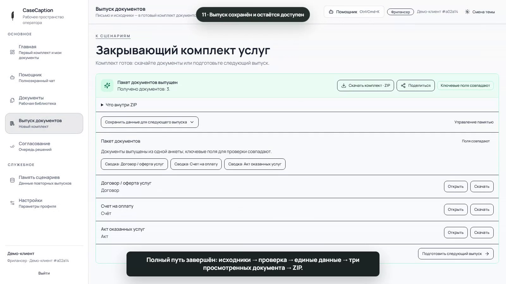
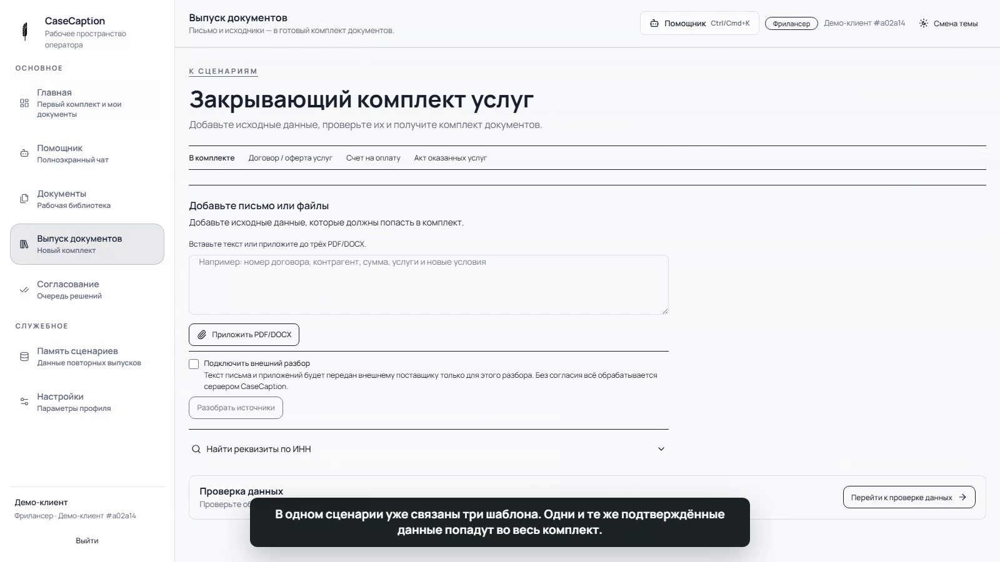
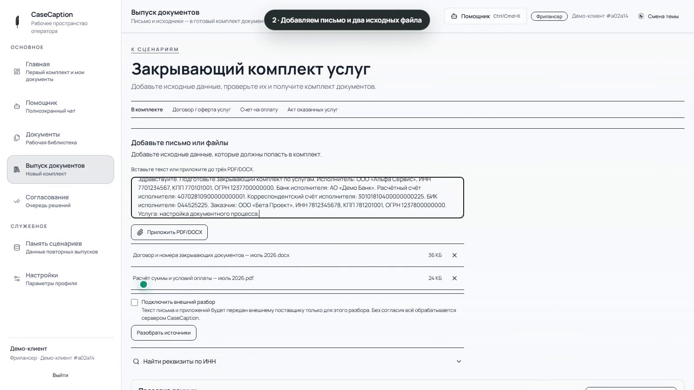
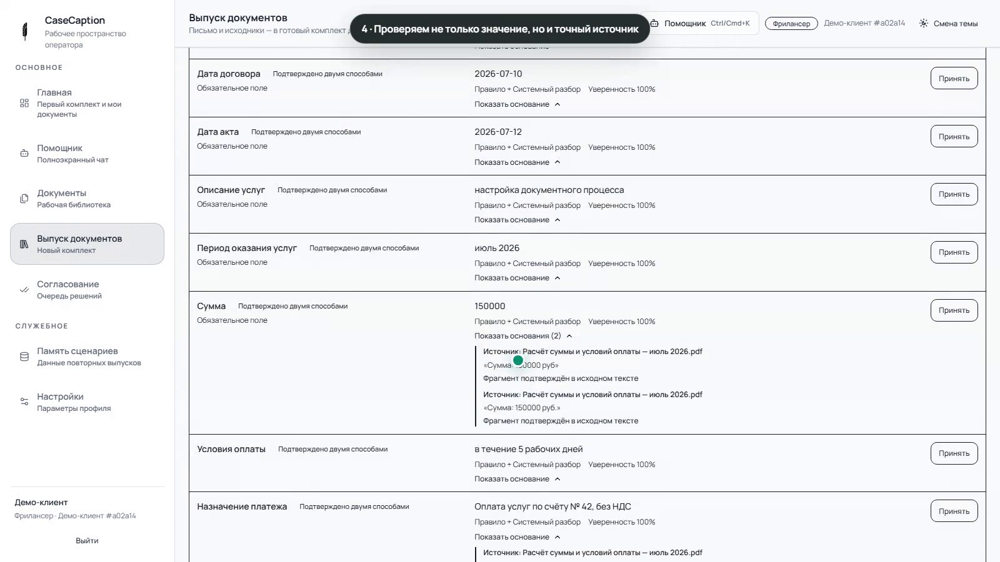
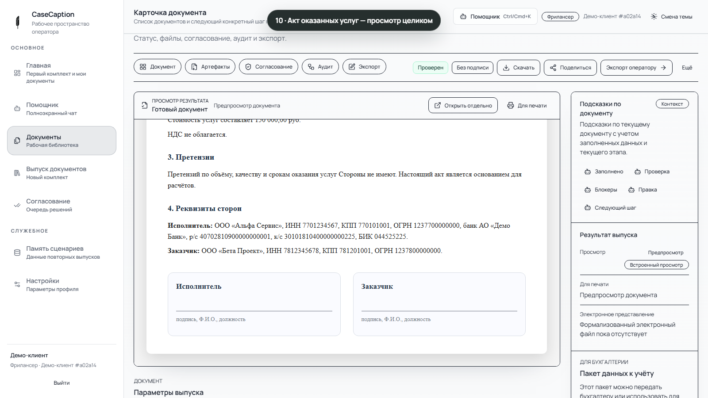

Договор, счёт и акт — без повторного переноса
Один повторяемый выпуск по шаблонам компании. На выходе — три документа и ZIP.

Один повторяемый выпуск по шаблонам компании. На выходе — три документа и ZIP.

Письмо содержит реквизиты и услугу, DOCX — номера и даты, PDF — сумму и условия оплаты.


CaseCaption показывает значение и точный фрагмент. Однозначные значения можно принять вместе, требующие проверки — только отдельно.

После выпуска открываем договор, счёт и акт и прокручиваем каждый от первой строки до нижней части.

Настройка на согласованных шаблонах компании и два самостоятельных контрольных выпуска сотрудником.
Один повторяемый процесс
До трёх утверждённых шаблонов
5 рабочих дней после согласования и получения материалов
29 000 ₽
Полное демо на 2:11 и 12-минутная проверка процесса.
Рабочие документы и шаблоны заранее не нужны.